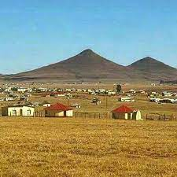

Hello there!
I am an aspiring self-taught Full Stack Web Developer. My interests are in Javascript and Python. For the past few months, I have been learning about Front End development using HTML, CSS and JavaScript. I am also interested in building chatbots and Machine Learning. As a result, I have been learning Python. You can find more information about me in my resume. !!!!!! I am partially sighted due to a condition called Keratoconus. This has led to me becoming a disability activist. I would like to build accessible websites so that all people are able to use them despite their physical or mental condition. !!!!! When I am not coding I like taking nature walks, looking for the cosiest coffee shops in town or spending time with my friends and family. I am also an avid knitter!
Skills
Programming Languages
- Javascript
- Python
Frameworks
- Node and Express
- Mocha and Jasmine
Projects
Gxojeni Project
Say something Repo: Gxojeni repo